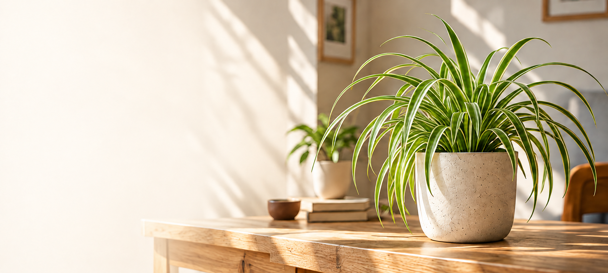

1Vælg en plante
Find en plante, der passer til dit hjem, og din hverdag.

Find din første stueplante,
og lær at passe den i dit eget tempo.
En lille hobby, der giver mere grønt og en rolig pasuse i hverdagen
Find din første stueplante, og lær at passe den i dit eget tempo.
Find din første planteFind en plante, der passer til dit hjem, og din hverdag.
Få styr på det helt basale udstyr til en god start.
Find en plante, der passer til dit hjem, og din hverdag.
Find en plante, der passer til dit hjem, og din hverdag.